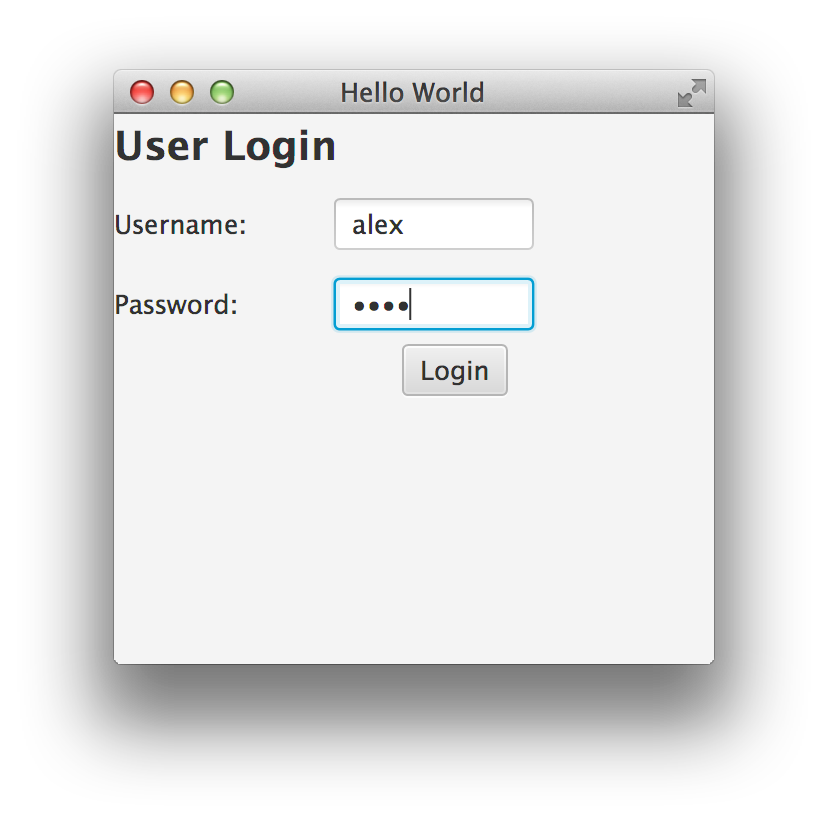

New Version 2.0.1
the new version is available at maven central we added a new module for iot with tinkerforge.

@SvenRuppert (Core Java / CDI / JavaFX / Reflection)

@A_Bischof (Core Java / CDI / JavaEE )
the new version is available at maven central we added a new module for iot with tinkerforge.
@SvenRuppert (Core Java / CDI / JavaFX / Reflection)
@A_Bischof (Core Java / CDI / JavaEE )
We are speaking Java, because it is a great pleasure for us.
JavaFX is out there for a couple of years (since Java 7U6) and still most of the 'old' desktop applications are running with Swing or Eclipse RCP. In some way it makes sense to me because GUI migrations can be really expensive and create some risks. But it is possible to do a so called 'smooth migration' which we have described here (currently only in german). But maybe customers have not migrated yet because of the lack of JavaFX testing tools. In this article we introduce to you TestFX and will show you what it does.
To show you the general usage of TestFX we have created a simple user application. It contains a simple
login dialog which delegates to a main dialog if the credentials are correct. The main dialog contains
a button, a textfield (to filter by age) and a table which contains users of the database. The sources of
this mini project can be found on RapidPM.

To create a TestFX-Test we have to create at first a test class which is derived from org.loadui.testfx.GuiTest and at second implement the method protected Parent getRootNode(). The result of this method is the JavaFX component which we want to test. Given that we can create our test-methods as shown with the simple LoginDialogTest shown beneath:
public class LoginDialogTest extends GuiTest {
@Override
protected Parent getRootNode() {
try {
return FXMLLoader.load(getClass().getResource("logindialog.fxml"));
} catch (IOException e) {
e.printStackTrace();
}
return null;
}
@Test
public void testSuccessfulLogin() {
final TextField tfusername = find("#tfusername");
click(tfusername).type("alex");
final PasswordField pfpassword = find("#pfpassword");
click(pfpassword).type("test");
Button blogin = find("#blogin");
click(blogin);
verifyThat("#status", hasText("granted"));
}
//snip
}
As you can see we provide our target to TestFX (a fresh login dialog instance) and create afterwards our test methods. In this case we want to test a successful login which results in the following steps:
Almost the same procedure has to be done for the other components password and clicking the button. After
that
we can test the expected behavior which in this case is the text granted in a status label.
But wait a moment, how can we do that GUI stuff (e.g. typing, clicking...)? Because we are deriving from
GuiTest we can use the full advantage
of the simple chaining API (which was one of the goals of TestFX) as well as the already provided GUI
functions. Here
we listed some of the more important functions:
You may have noticed that we test with the verifyThat method which is also part of TestFX (do be precise of the class org.loadui.testfx.Assertions) and acts as a bridge between TestFX and the Hamcrest API. With that the test code keeps really small and offers also the possibility to extend TestFX for your own JavaFX components.
In the next part we will show how we can test the rest of this small application. For that we have to create a new test class and again provide our target to test in the getRootNode() method. After this we can implement our test cases.
public class MainDialogTest extends GuiTest {
@Override
protected Parent getRootNode() {
try {
return FXMLLoader.load(getClass().getResource("maindialog.fxml"));
} catch (IOException e) {
e.printStackTrace();
}
return null;
}
@Test
public void testSearchAge44() {
//Given
UserService.Service.addUser(new User("Mustermann", "Hans", 44));
//When
//Set Age 44
final TextField text = find("#tfage");
click(text).type("44");
//Search
Button bsearch = find("#bSearchUser");
click(bsearch);
TableView table = find("#tableView");
int entryCount = table.getItems().size();
//Then
//Only one shoud be resolved
Assert.assertTrue(entryCount == 1);
verifyThat(".table-view", containsCell("Mustermann"));
}
//snip
Interesting links: